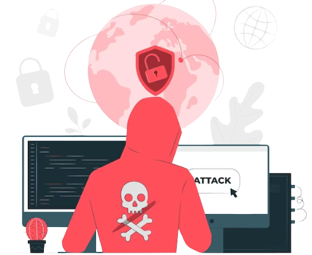
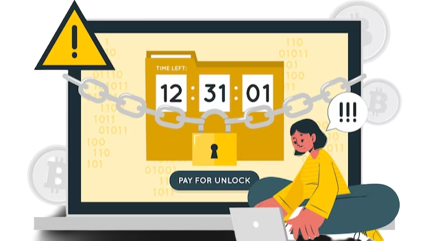

A zero-day attack is a type of cyber attack that exploits a previously unknown vulnerability in a computer system or software. The term "zero-day" refers to the fact that the vulnerability has never been discovered or disclosed to the public, and therefore, the system or software's vendor has had zero days to develop and release a patch to fix the issue.
These types of attacks can be particularly dangerous because they allow attackers to gain unauthorized access to a system or steal sensitive information without being detected.
A zero-day threat is a security threat that exploits a previously undiscovered vulnerability in the computer. The name "zero-day" is designed to imply how long the vulnerability has been present for. The term also indicates that system developers have had zero days to fix it.
Zero-day attacks are vulnerabilities so new that the security firms have never seen them before and have had zero days to fix them. Luckily, it is possible to lessen the chances of it impacting you or your business.

A zero-day attack is an attack that exploits a security vulnerability that has not been publicly disclosed or patched. Zero-day attacks can be particularly dangerous because they can happen without any warning and can often exploit vulnerabilities in software that we use every day. Follow the link to learn more.
Maintaining a good firewall and up-to-date antivirus is the best step you can take to ensure the security of your system. A firewall monitors traffic in and out of your network and can reduce unauthorized entry. Antivirus software can also identify and stop many threats, even if it does not have information about the specific threat in its database.
If a zero-day threat manages to get into your network, our next goal should be to restrict its effects as much as possible. By restricting user access to only essential files and systems, we can limit the damage done to the smallest number of systems. A good security policy dictates that each account should only have full access to the systems needed to complete the user’s job. For example, users from the accounts department shouldn’t have access to sales department databases.
In this way, the damage of a single compromised account is limited to only the network area it operates in. Such limited impact should be easy enough for containment and cleanup.
Data backups are your best protection against major, lasting damage from a network security breach. Having a good backup means having the procedures in place to create regular backup copies, and to ensure that those backups can be restored at a later date.
Reliable, well-tested backups are worth their weight in gold. Knowing that your data is safe, and that your system can be recovered, gives you peace of mind against even the most highly destructive zero-day attacks.
While the precise methods of a zero-day exploit can’t be known in advance, a network intrusion protection system (NIPS) can monitor the firms’ network for unusual activity.
One advantage of a traditional antivirus-only system is that it does not rely on comparing software against a known database of threats. Rather, it uses behavior monitoring to detect anomalies that may indicate an attack. This means it does not need updates or patches as frequently as other systems, which makes it less vulnerable to the latest attacks.

When unusual traffic or events are detected, administrators are alerted and the firewall is locked down. Physical devices like USB drives and mobile devices can introduce threats to the network by bypassing the firewall.
By using these techniques in combination, you can prevent, protect, and mitigate against the kinds of threats that even the top security firms haven’t patched yet. We think it’s important to keep your firm secure whatever it might come up against in the future - and having security experts on hand 24/7 is a nice bonus.
Ultimately, zero-day attacks are dangerous and can have a major impact on organizations and individuals. It is important to stay vigilant and take the necessary steps to protect yourself from such attacks. This includes regularly updating your software, using security solutions such as firewalls and antivirus software, and staying informed about the latest security developments. By taking these steps, you can help protect yourself from these dangerous cyberattacks.